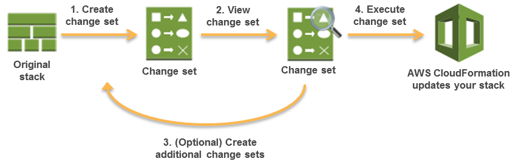

本文為英文版的機器翻譯版本，如內容有任何歧義或不一致之處，概以英文版為準。
透過變更集更新堆疊
當您需要更新堆疊時，可以先掌握變更對執行中資源的影響，再進行實作；如此一來，即可安心地更新堆疊。變更集讓您可以預覽請求的堆疊變更對執行中資源會造成何種影響。舉例來說，變更是否會導致任何重要資源遭到刪除或取代。唯有在確定要執行變更集時，AWS CloudFormation 才會進行堆疊變更，讓您能藉此決定要繼續執行請求的變更，或是建立另一個變更集以探索其他變更。您可以使用 CloudFormation 主控台、AWS CLI 或 CloudFormation API 來建立並管理變更集。
重要
變更集概觀
下圖將摘要說明利用變更集更新堆疊的方式：

-
為欲更新的堆疊提交變更，進而建立變更集；您可以提交修改後的堆疊範本或修改後的輸入參數值。CloudFormation 會將堆疊與提交的變更進行比較，以便產生變更集。此時，系統還不會變更堆疊。
-
檢視變更集，即可掌握會變更的堆疊設定與資源。例如，您可以查看 CloudFormation 要新增、修改或刪除的資源。
-
選用：如果您在確定要進行的變更之前，還需要考慮其他變更，則請建立額外的變更集。建立多個變更集將有助於您了解並評估不同變更對資源造成的影響，且您可以視需要建立任意數量的變更集。
-
執行變更集，該變更集內含要套用至堆疊的變更。CloudFormation 將利用這些變更來更新堆疊。
注意
一旦執行變更，CloudFormation 即會移除所有與堆疊相關聯的變更集，因為這些變更集不適用於更新後的堆疊。
您亦可自行刪除變更集，以防執行不應套用的變更集。